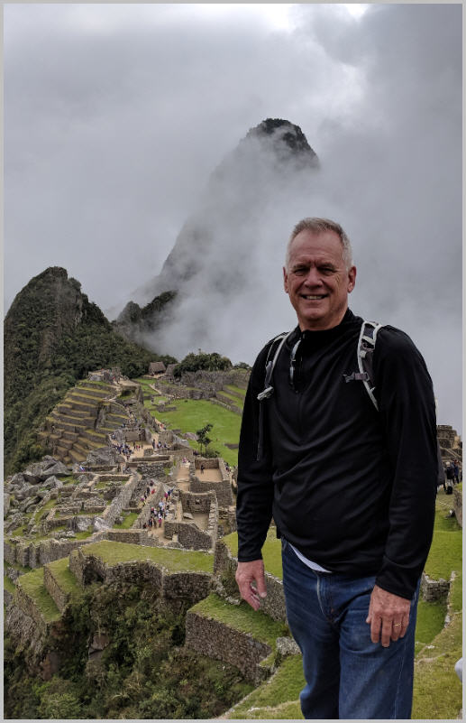

.
Mark Jepperson works with leaders, teams, and organizations as an agent of change,
facilitating the alteration of human capability and organizational systems to produce
integrated and aligned results, which are achieved through passion, future-based possibility
thinking, understanding work culture, and creating alignment.
He served many roles in his 32-year career at Raytheon: architect, capital and program planner,
business analyst, facilitator, chief learning officer, certified Raytheon Six Sigma Expert ®,
change agent, Lean Manufacturing consultant (Shingo Prize® winner), organizational
development manager, creator of organizational systems and performance maturity models
and executive coach – in short, he knows systems interact and work.
And currently, Mark consults, writes, speaks, and travels the globe!